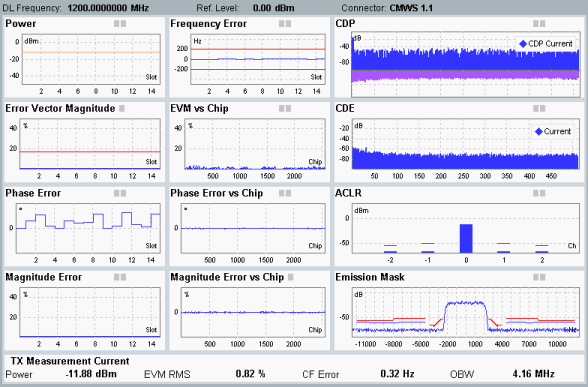

The results of the WCDMA NodeB TX measurement are displayed in several different views.
For detailed description, see "Measurement Results".
The multi-evaluation measurement provides an overview dialog and a detailed view for each diagram in the overview. The overview dialog shows the modulation, power, spectrum and code domain power results as traces or bar graphs. A selection of statistical results of TX measurements is also shown.

Most of the detailed views show a diagram and a statistical overview of single-slot results.

The results can be retrieved via the following remote commands.
Remote command:The results can be retrieved via the following remote commands.
Remote command: